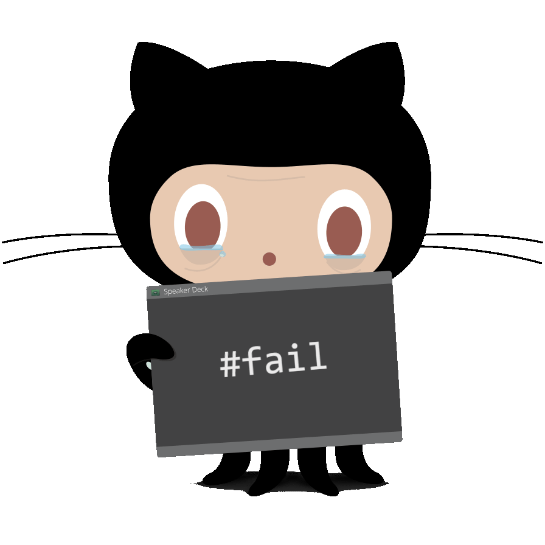

<style>
    .reveal section.has-dark-background h1, .reveal section.has-dark-background { color: #fff; }
    .reveal section h1, .reveal section h2 { text-transform: none; }
    .reveal section h1.title { width: 75%; margin: 0 auto; line-height: 1.5em; }
    .reveal section .subtitle { color: #ddd; margin-top: 2em; font-size: 0.8em; line-height: 1.3em; }
    .reveal section .subtitle.light { color: #444; }
    .reveal section .subtitle a:link, .reveal section .subtitle a:visited { color: #ccf; }
    .reveal section .subtitle.light a:link, .reveal section .subtitle.light a:visited { color: #88d; }
    .reveal section sup { font-size: 0.6em; position: relative; top: -1em; }
    .octocat, .slide-image { width: 20rem; }
    .reveal cite.no-prompt::before { content: ""; }
    .reveal section .dark-bg-header { color: #fff; font-weight: bold; text-shadow: 0.05em 0.05em 0.1em #000; }
    .reveal section cite { width: 100%; text-align: center; }
    .reveal .controls { display: none; }
</style>

<section data-background='black'>
    <h1 class='title'>
        State of Open Source<br>in the Federal Government
    </h1>

    <p class='subtitle'>
        Jordan Kasper<br>
        <a href='https://bsky.app/profile/jakerella.bsky.social' target='_blank' title='link to my Bluesky profile'>@jakerella.bsky.social</a>
    </p>
</section>

<section>
    <h1>Why me?</h1>
    <p class='fragment'>OSS contributor & maintainer since ~2008</p>
    <p class='fragment'>Helped write the DoD's 2022 open source policy</p>
    <p class='fragment'>Wrote the 2023 DHS open source policy</p>

    <aside class='notes'>
        SW engineer, split time between private industry and public sector, joined USDS 2017<br>
        NOTE: these views are 100% my own and not that of the federal government
    </aside>
</section>

<section>
    <ol style='width: 35%; margin: 2em auto;'>
        <li>Why Open Source?</li>
        <li class='fragment'>The Challenges</li>
        <li class='fragment'>The Policy</li>
        <li class='fragment'>The Reality</li>
        <li class='fragment'>The Possibilities</li>
    </ol>

    <aside class='notes'>
        This is our agenda -- MENTION which areas may be shorter (OSS is good?)<br>
        Questions at the end of the preso, also manmy links throughout
    </aside>
</section>


<!-- **************************************************************** -->

<section data-background='#ddeeff'>
    <h1>Open Source is good. <sup>[citation needed]</sup></h1>
</section>

<section>
    <h1>Reusability</h1>
    

    <aside class='notes'>
        build once, use anywhere... but also requires a lot of the other aspects of OSS
    </aside>
</section>

<section>
    <h1>Collaboration and Contribution</h1>
    

    <aside class='notes'>
        "group mindset" to catch issues a solo dev might not<br>
        critical for having a secure ecosystem
    </aside>
</section>

<section>
    <h1>Security</h1>
    

    <aside class='notes'>
        OSS is secure, and often more secure than closed source projects<br>
        most important is that collaboration mentioned a moment ago<br>
        there are challenges in gov that we'll talk about later
    </aside>
</section>

<section data-background='black'>
    <h1 style='color: #fff;'>Transparency</h1>
    

    <aside class='notes'>
        without this, we don't get collaboration and we don't get security<br>
        one of the areas that gov general agrees is good about OSS
    </aside>
</section>

<section>
    <h1>Cost *</h1>
    
    
    <aside class='notes'>
        Asterisk here because while TCO may be lower, it is not zero-cost<br>
        gov and private orgs must spend money (time) to participate in the process<br>
        Reference Harvard study (and OS Summit Keynote) on value of open source
    </aside>
</section>

<section>
    <h1>For the people...</h1>
    

    <aside class='notes'>
        the people's taxes pay for all gov systems, so that code is for you
    </aside>
</section>


<!-- **************************************************************** -->

<section data-background='#ddeeff'>
    <h1>The Challenges</h1>
</section>

<section data-background='images/hacking.jpg'>
    <h1 class='dark-bg-header' style='margin: 3em 0 6em 0;'>"OSS is insecure"</h1>
    <cite style='color: #eee'>https://www.flickr.com/photos/thepreiserproject/</cite>

    <aside class='notes'>
        most common argument against OSS from gov, but mostly because we don't consume it well<br>
        also applies to our code being published: "if we open it, bad actors will know our vulns!"
    </aside>
</section>

<section>
    <h1>"It's illegal"</h1>
    
    <cite style='color: #eee'>https://undraw.co</cite>

    <aside class='notes'>
        Not a joke, some people in gov think both using AND publishing is illegal<br>
        for publishing, it's about contractor IP
    </aside>
</section>

<section data-background='images/mine.jpg'>
    <h1 class='dark-bg-header' style='margin: 5em 0 4em 0;'>"We paid for it, it's ours."</h1>
    <cite>http://disney.wikia.com/wiki/Seagulls_(Finding_Nemo)</cite>

    <aside class='notes'>
        inane argument... the people paid for it, code belongs to them
    </aside>
</section>

<section>
    <h1>Lack of Techincal Knowledge</h1>
    
    <cite>http://www.doncio.navy.mil/CHIPS/ArticleDetails.aspx?ID=7076</cite>

    <aside class='notes'>
        Grace Hopper was an exceptional computer scientist, but we've lost that tech knowledge<br>
        no longer have enough people in gov to call out bad things and develop/approve good processes
    </aside>
</section>

<section data-background='#fdefcb'>
    <h1>Stagnation</h1>
    
    <cite>https://commons.wikimedia.org/wiki/File:III-A-12.jpg</cite>

    <aside class='notes'>
        both in the code and the people<br>
        Code: we wall off our systems, then never touch them again<br>
        People: don't always stay up to date on latest industry developments (remember lack of tech knowledge)
    </aside>
</section>


<!-- **************************************************************** -->

<section data-background='#ddeeff'>
    <h1>The Policy</h1>
</section>

<section data-background='images/source-code.jpg'>
    <h1 class='dark-bg-header' style='margin-top: -4em;'>
        Federal Source Code Policy
        (<a href='https://obamawhitehouse.archives.gov/sites/default/files/omb/memoranda/2016/m_16_21.pdf' title='Federal Source Code Policy (M-16-21)' target='_blank'>M-16-21</a>)
    </h1>

    <aside class='notes'>
        "M" for memo (from OMB), "16" for 2016, "21" sequential identifier<br>
        Open source has been happening in gov for decades, but this policy really started the current movement<br>
        Focused a lot on build vs buy (preferring COTS and existing solutions)
    </aside>
</section>

<section>
    <h1>Section 5: Open Source Software</h1>
    <ul style='margin-top: 1.5em;'>
        <li class='fragment'>Pilot program to release 20% of gov code as OSS <span class='fragment'><br>(ended in 2019)</span></li>
        <li class='fragment'>
            Participation in the community
            <ul>
                <li>Open development practices</li>
                <li>Community engagement</li>
                <li>Accepting code contributions</li>
                <li>Focus on documentation</li>
            </ul>
        </li>
    </ul>

    <aside class='notes'>
        What does 20% mean here? LoC? Projects? Files?<br>
    </aside>
</section>

<section>
    <h1>Section 4: Goverment-Wide Code Reuse</h1>

    <ol style='width: 50%; margin: 2em auto;'>
        <li class='fragment'>Data rights to share code</li>
        <li class='fragment'>Code inventory</li>
    </ol>

    <aside class='notes'>
        Data rights were critical for gov to open source its code<br>
        Inventory was of ALL custom developed code, not just OSS
    </aside>
</section>

<section data-transition='none'>
    <h1>Code.gov</h1>

    <aside class='notes'>
        Liaison for OSS in fed gov, tracked progress of all agencies<br>
        Did not host code, but established guidance and best practices
    </aside>
</section>

<section data-transition='none'>
    <h1 style='margin-top: 1.25em; text-decoration: line-through;'>Code.gov</h1>
    <h1 class='fragment'>Digital.gov</h1>

    <aside class='notes'>
        Most guidance still exists on digital.gov, but no more agency tracking or liaising
    </aside>
</section>

<section>
    <h1>SHARE IT Act</h1>
    <p>
        <a href='https://www.congress.gov/bill/118th-congress/house-bill/9566' title='SHARE IT Act legislation' target='_blank'>
            congress.gov/bill/118th-congress/house-bill/9566
        </a>
    </p>
    <ol style='width: 70%; margin: 2em auto;'>
        <li class='fragment'>Data rights to share code</li>
        <li class='fragment'>Goverment-wide code access and reuse</li>
        <li class='fragment'>Code inventory</li>
    </ol>

    <aside class='notes'>
        There's executive policy, but then there's law; passed in 2024<br>
        Note similarities to M-16-21! (on purpose)<br>
        This is important because the exec branch can't get rid of it, but also more accountability mechanisms
    </aside>
</section>

<section>
    <h2>DHS Inventory: <a href='https://code.mil/code.json' target='_blank'>dhs.gov/code.json</a></h2>
    <pre><code style='font-size: 0.65em;'>{
  "agency": "DHS",
  "releases": [
    {
      "name": "trustymail",
      "contact": { ... },
      "description": "Scan domains and return data based on trustworthy email best practices",
      "homepageURL": "https://github.com/cisagov/trustymail",
      "repositoryURL": "https://github.com/cisagov/trustymail.git",
      "languages": [ "Python", "Shell", "Dockerfile" ],
      "organization": "Cybersecurity and Infrastructure Security Agency",
      "permissions": {
        "licenses": [{ "name": "CC0-1.0" }]
      },
      "status": "Development",
      "tags": [ ... ],
      ...
    },
    { ... }
  ]
}</code></pre>

    <aside class='notes'>
        One example of a project, note that this one is OSS which you can see from license<br>
        Many agencies have an inventory and top level (.gov domain), but most not complete
    </aside>
</section>

<section>
    <h1>EO 14144 (January 2025)</h1>
    <h2 style='text-transform: none;'><a href='https://www.federalregister.gov/documents/2025/01/17/2025-01470/strengthening-and-promoting-innovation-in-the-nations-cybersecurity' title='Strengthening and Promoting Innovation in the Nations Cybersecurity' target='_blank'>
        Strengthening and Promoting Innovation in the Nation's Cybersecurity
    </a></h2>

    <p class='fragment'>
        Section 2(c) (was 2(e)):<br>
        CISA must create "recommendations to agencies on the use of security assessments and patching of 
        open source software and <strong>best practices for contributing to open source software projects</strong>."
    </p>

    <aside class='notes'>
        "EO" is executive order, this one was revised recently, but still in effect<br>
        Contributing to upstream projects is essential for a secure ecosystem
    </aside>
</section>

<section>
    <h1>Agency Open Source Policies &amp; Guidance</h1>
    <ul style='width: 90%; margin: 2em auto;'>
        <li><a href='https://www.dhs.gov/sites/default/files/2023-09/23_0913_ocio-policy-directive-142-04-rev-02.pdf' target='_blank'>Department of Homeland Security (DHS)</a></li>
        <li><a href='https://dodcio.defense.gov/Portals/0/Documents/Library/SoftwareDev-OpenSource.pdf' target='_blank'>Department of Defense (DoD)</a></li>
        <li><a href='https://github.com/CMSgov/cms-open-source-policy/blob/main/Policy.md' target='_blank'>Center for Medicare &amp; Medicaid Services (CMS)</a></li>
        <li><a href='https://code.nasa.gov/#/guide' target='_blank'>National Aeronautics &amp; Space Administration (NASA)</a></li>
        <li><a href='https://open.gsa.gov/oss-policy/' target='_blank'>General Services Administration (GSA)</a></li>
        <li><a href='https://github.com/cfpb/source-code-policy/blob/gh-pages/cfpb-source-code-policy.md' target='_blank'>Consumer Financial Protection Bureau (CFPB)</a></li>
        <li><a href='https://github.com/cisagov/development-guide/blob/develop/open-source-policy/policy.md' target='_blank'>Cybersecurity &amp; Infrastructure Security Agency (CISA)</a></li>
    </ul>

    <p class='fragment'>Unfortunately, most of these are focused only on <em>publication</em> and not <em>consumption</em></p>

    <aside class='notes'>
        Not a complete list, but many agency policies and guidance are only internally published
    </aside>
</section>


<!-- **************************************************************** -->

<section data-background='#ddeeff'>
    <h1>The Reality</h1>
</section>

<section>
    <h2>Is anyone actually sharing code?</h2>
    <div class='fragment'>
        <iframe src='https://government.github.com/community/#governments-us-federal' frameborder='1' style='width: 102%; height: 58vh;'></iframe>
        <p>https://government.github.com/community</p>
    </div>

    <aside class='notes'>
        This site (government.github.com) has a ton of world-wide public sector entities publishing OSS now<br>
        "US Federal" is just one section, but with 164 orgs!<br>
        The reality is that many agencies are publishing OSS, and ALL OF THEM are consuming it
    </aside>
</section>

<section>
    <h2>Some Examples</h2>

    <ul style='width: 60%; margin: 2em auto;'>
        <li class='fragment'>
            <a href='https://github.com/SELinuxProject/selinux' target='_blank'>SE Linux (NSA)</a>
        </li>
        <li class='fragment'>
            <a href='https://github.com/uswds/uswds' target='_blank'>U.S. Web Design System (GSA)</a>
        </li>
        <li class='fragment'>
            <a href='https://github.com/nasa/openmct' target='_blank'>Open MCT (NASA)</a>
        </li>
        <li class='fragment'>
            <a href='https://github.com/IRS-Public/direct-file' target='_blank'>IRS Direct File (IRS)</a>
        </li>
    </ul>

    <aside class='notes'>
        SE Linux: developed by NSA, open sourced in 2000<br>
        USWDS: biggest cross-gov project, used by all agencies, contributions from all over<br>
        Open MCT: mission control framework<br>
        Most recently, the IRS open sourced Direct File, a free way to file your taxes online
    </aside>
</section>

<section>
    <h2>How much is open?</h2>
    <p class='fragment' style='font-size: 4em;'>😭</p>
</section>

<section>
    <h2>What about upstream OSS?</h2>

    <p class='fragment'>
        Government is (arguably) the largest consumer of OSS ...
    </p>
    <p class='fragment'>
        ... and might be the worst consumer of open source.
    </p>

    <aside class='notes'>
        Fed Gov spends over $100 billion on IT & cyber systems<br>
        DHS alone operates thousands of systems, hundreds of which are considered mission essential<br>
        It's not just about publishing, it's about how we consume AND support ecosystem<br>
    </aside>
</section>

<section>
    <h2>What's the process for using OSS in gov?</h2>
</section>

<section data-transition='none'>
    <h2>1. Selection</h2>
    

    <aside class='notes'>
        How we decide to use a piece of OSS, what are the criteria?<br>
        Devs typically know what they want and need functionally, but what about docs, tests, CI, security, etc?
    </aside>
</section>

<section data-transition='none'>
    <h2 style='text-decoration: line-through;'>1. Selection</h2>
    

    <aside class='notes'>
        No standardized process, frequently ignore warning signs (stale repos, no velocity, single contributor, etc)
    </aside>
</section>

<section data-transition='none'>
    <h2>2. Consumption</h2>
    

    <aside class='notes'>
        How do we pull dependencies into our build process? How do we ensure we do so safely?
    </aside>
</section>

<section data-transition='none'>
    <h2 style='text-decoration: line-through;'>2. Consumption</h2>
    

    <aside class='notes'>
        No standardized process, limited use of mirrors, often a "one and done" situation
    </aside>
</section>

<section data-transition='none'>
    <h2>3. Contribution</h2>
    

    <aside class='notes'>
        When we find bugs or vulns in OSS, what do we do? What about when we need new features? 
    </aside>
</section>

<section data-transition='none'>
    <h2 style='text-decoration: line-through;'>3. Contribution</h2>
    

    <aside class='notes'>
        No standardized process, blockers from legal, security, privacy (remember "Challenges")<br>
        This one often comes down to poor software contracts... more in a min
    </aside>
</section>


<!-- **************************************************************** -->

<section data-background='#ddeeff'>
    <h1>The Possibilities</h1>

    <aside class='notes'>
        Reminder: these views are my own!
    </aside>
</section>

<section>
    <h2>Goal: <strong>Increase Open Source Publication</strong></h2>
    <ul style='width: 70%; margin: 2em auto;'>
        <li class='fragment'>Clear guidance on the process</li>
        <li class='fragment'>Build modular, reusable components</li>
        <li class='fragment'>Make it a contract requirement</li>
        <li class='fragment'>Enforce secure coding practices</li>
    </ul>

    <aside class='notes'>
        Contracts: forcing a company to START from an open source approach will force them to think twice about their bad practices<br>
        Secure Coding: "Secure by Design" from CISA and the Secure Software Development Framework from NIST
    </aside>
</section>

<section>
    <h2>Goal: <strong>Secure Government Systems</strong></h2>
    <ul style='width: 70%; margin: 2em auto;'>
        <li class='fragment'>Baseline OSS selection process</li>
        <li class='fragment'>Automate OSS scanning &amp; approval</li>
        <li class='fragment'>Use mirrors</li>
        <li class='fragment'>Guidance on OSS updating</li>
    </ul>

    <aside class='notes'>
        guidance needs to be cross-agency! CISA will be doing some of this based on EO 14144
    </aside>
</section>

<section>
    <h2>Goal: <strong>Support a Secure Ecosystem</strong></h2>
    <ul style='width: 70%; margin: 2em auto;'>
        <li class='fragment'>Contribute all security fixes upstream</li>
        <li class='fragment'>Cotnributions to OSS we rely on</li>
        <li class='fragment'>Grants for critical OSS infrastructure</li>
        <li class='fragment'>Be an active participant in the community</li>
    </ul>

    <aside class='notes'>
        Upstream security fixes need to be required in gov contracts<br>
        Being an active participant isn't hard: XML parsing library efficiency config option example<br>
        If we do this right, we can inject hundreds of thousands of developers into the OSS ecosystem!
    </aside>
</section>


<section data-background='#999999'>
    <h1 style='color: #fff;'>What can you do?</h1>
    
</section>

<section>
    <h2>As a contractor...</h2>

    <aside class='notes'>
        Do better. Do this on your own. You don't need specific contract terms to do it!
    </aside>
</section>

<section>
    <h2>As a federal employee...</h2>

    <aside class='notes'>
        push for open-by-default practices and better IT contracts!
    </aside>
</section>

<section>
    <h2>As a private indivudal...</h2>

    <aside class='notes'>
        contribute to gov OSS!<br>
        comment on proposed new regulations that affect IT systems: regulations.gov
    </aside>
</section>


<!-- **************************************************************** -->

<section data-background='#ddeeff'>
    <h1 class='title' style='color: #000;'>Thank You!</h1>
    
    <h2>State of Open Source<br>in the Federal Government</h2>

    <p class='subtitle light'>
        Jordan Kasper<br>
        <a href='https://jordankasper.com/oss-in-gov' target='_blank' title='link to my personal website'>jordankasper.com/oss-in-gov</a> | 
        <a href='https://bsky.app/profile/jakerella.bsky.social' target='_blank' title='link to my Bluesky profile'>@jakerella.bsky.social</a>
    </p>

    <cite class='no-prompt' style='bottom: -8em; line-height: 1.3em;'>
        All Octocats borrowed from https://octodex.github.com
        <br>
        (This is not an endorsement of GitHub, I just like the Octocats.)
    </cite>
</section>

<section data-background='#000000'>
    <h1>Other Links &amp; Referenes</h1>

    <ul style='column-count: 2;'>
        <li><a href='https://obamawhitehouse.archives.gov/sites/default/files/omb/memoranda/2016/m_16_21.pdf' target='_blank'>Federal Source Code Policy (M-16-21)</a></li>
        <li><a href='https://digital.gov/resources/requirements-for-achieving-efficiency-transparency-and-innovation-through-reusable-and-open-source-software/' target='_blank'>Digital.gov page on OSS</a></li>
        <li><a href='https://dodcio.defense.gov/open-source-software-faq/' target='_blank'>DoD OSS FAQ</a></li>
        <li><a href='https://bidenwhitehouse.archives.gov/wp-content/uploads/2024/01/Securing-the-Open-Source-Software-Ecosystem-OS3I-End-of-Year-Report-MASTERCOPY.pdf' target='_blank'>ONCD OSS Security Report</a></li>
        <li><a href='https://www.federalregister.gov/documents/2025/01/17/2025-01470/strengthening-and-promoting-innovation-in-the-nations-cybersecurity' target='_blank'>EO 14144 on Cybersecurity</a></li>
        <li><a href='https://www.cisa.gov/resources-tools/resources/cisa-open-source-software-security-roadmap' target='_blank'>CISA Open Source Security Roadmap</a></li>
        <li><a href='https://github.com/cisagov/development-guide/blob/develop/open-source-policy/policy.md' target='_blank'>CISA OSS Policy</a></li>
        <li><a href='https://www.library.hbs.edu/working-knowledge/open-source-software-the-nine-trillion-resource-companies-take-for-granted' target='_blank'>Value of OSS to companies</a></li>
    </ul>
</section>
